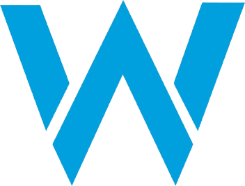
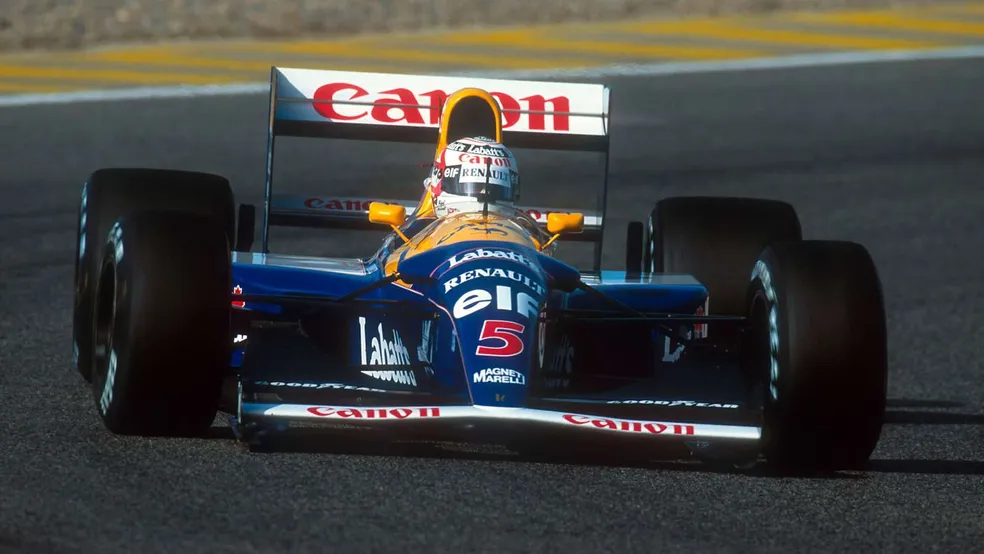
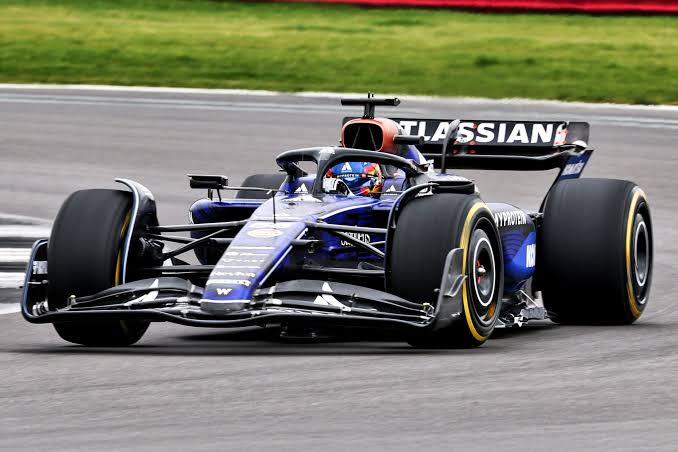

Williams Racing
A tradição de Sir Frank Williams e a gloriosa trajetória de uma garagem independente.
Fundada em 1977 por Frank Williams e Patrick Head, a Williams tornou-se uma das escuderias mais vitoriosas da Fórmula 1, conquistando 9 Títulos de Construtores e 7 Títulos de Pilotos.

Pilotos Marcantes
- Nigel Mansell (Campeão em 1992 com o FW14B)
- Nelson Piquet (Campeão em 1987)
- Alain Prost (Campeão em 1993)
- Damon Hill & Jacques Villeneuve (Campeões em 1996 e 1997)
- Ayrton Senna (Correu pela equipe em 1994)
Pioneirismo Técnico
Responsável por desenvolver a suspensão ativa mais avançada da história da F1 nos anos 90, dominando o esporte com inteligência de engenharia pura.
Situação em 2026
Em constante processo de modernização e reestruturação, a Williams disputa a temporada de 2026 impulsionada por motores Mercedes com os experientes Alex Albon e Carlos Sainz.
Galeria de Carros Históricos

Williams FW14B (1992)
Considerado um dos monopostos mais tecnológicos de todos os tempos.

FW47 / 2026
O modelo da equipe para a nova era sustentável de 2026.